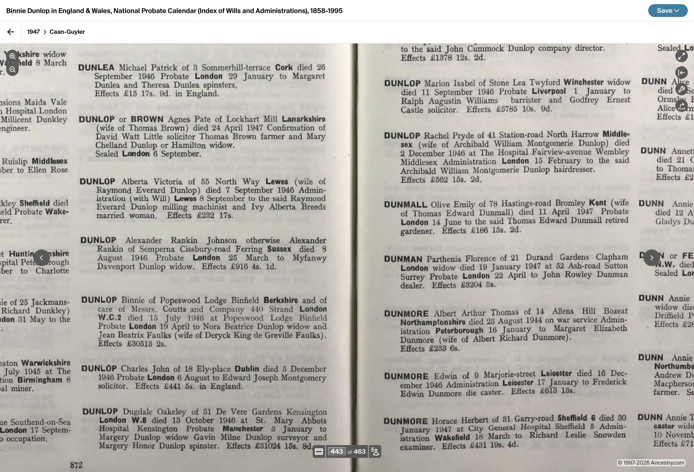

Item 76 · April 19, 1947
Probate calendar entry: Binnie Dunlop
Detail-only browser capture of Ancestry’s source-image viewer; this file is a capture of the viewer, not a downloaded original scan.
Source images
Open the original source-image viewer at Ancestry

Transcription
The complete Binnie Dunlop entry on printed page 872. Printed wording, punctuation and line breaks are retained.
DUNLOP Binnie of Popeswood Lodge Binfield Berkshire and of care of Messrs. Coutts and Company 440 Strand London W.C.2 died 15 July 1946 at Popeswood Lodge Binfield Probate London 19 April to Nora Beatrice Dunlop widow and Jean Beatrix Faulks (wife of Deryck King de Greville Faulks). Effects £30513 2s.
Source reference
Citation
Principal Probate Registry; London, England; Calendar of the Grants of Probate and Letters of Administration made in the Probate Registries of the High Court of Justice in England
Information
Ancestry.com. England & Wales, National Probate Calendar (Index of Wills and Administrations), 1858-1995 [database on-line]. Lehi, UT, USA: Ancestry.com Operations, Inc., 2010. Original data: Principal Probate Registry. Calendar of the Grants of Probate and Letters of Administration made in the Probate Registries of the High Court of Justice in England. London, England © Crown copyright.